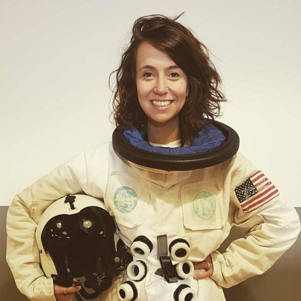
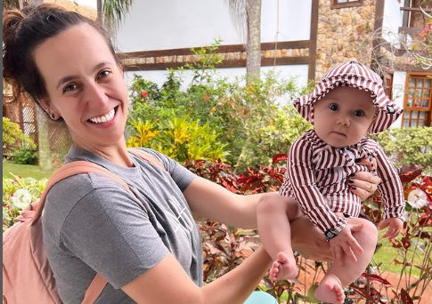

Biografia da Camila Achutti

Relatos de Camila ao fim de sua graduação:
Nasci em 21 de dezembo de 1991, e já tive companhia mesmo nesse momento solitário para muitos. Comigo nasceu uma menina igualzinha a mim. Sim, eu tenho uma irmã gêmea. Cresci em São Paulo, mas me divertia mesmo em Sorocaba, contava os dias para que chegasse sexta e pudesse ir para chácara ser criança e estar cercada de primos, tios e tias. Enfim, fui uma criança feliz.
O tempo passou rápido e quando vi já tinha lá meus 17 anos e me vi tendo que tomar uma das decisões mais difíceis da minha vida: O que eu vou ser quando crescer?
1. Decidindo meu futuro
Muitos me perguntam o que eu estou fazendo na Ciência da Computação. Sempre gostei muito de matemática e física, mas também gosto de escrever e me fazer entender através das palavras. Acho que tudo começou quando meu pai ainda jovem aprendeu a programar e acabou indo trabalhar em tecnologia. Imaginem só o que era para uma garotinha ver o homem que ela tanto admirava ditar, as vezes por telefone e de madrugada, o que hoje eu sei se tratar de código em COBOL, uma língua totalmente desconhecida, mas que magicamente resolvia problemas. Minha vontade era um dia entender essa tal língua. Queria ser como ele.
E com 18, me esforcei para ter a chance de estudar numa grande universidade aquilo que me faria entender tudo aquilo, ou melhor, quase tudo.
2. A faculdade
Entrei no IME em 2010, com 18 anos e muitos planos na cabeça. Logo descobri que aquele era o lugar onde, provavelmente, conheceria muitos dos amigos que levaria para o resto da minha vida e aprenderia coisas totalmente novas. Acertei. Descobri um mundo de possibilidades.
Aprendi a programar, aprendi que não sabia o que era matemática e física de verdade, entrei para atlética, joguei vôlei e basquete, fiz festa e estudei noites a fim, descobri que gosto de front-end e odeio maratona. Descobri que programar é uma arte, é concretizar uma ideia, é resolver um problema, é melhorar a vida das pessoas. Consegui atingir muitas pessoas com as minhas palavras e mudei a vida de algumas delas. Conheci pessoas maravilhosas, grandes mestres e aprendizes dedicados. Viajei, conheci outros continentes, conheci meus autores preferidos e os meus melhores amigos. Trabalhei e estudei como nunca antes. Fui estagiária, voluntária e bolsista FAPESP. Fui feliz.
3. Futuro
A graduação já está acabando e em dezembro já não preciso passar meus dias no IME, mas acho que vou optar por isso. Quero sim fazer pós-graduação e aprender mais, muito mais. Dizer que quero seguir carreira acadêmica, empreender, inovar, trabalhar no banco, numa grande empresa ou numa startup pode não passar de mentira, não tenho certeza sobre isso ainda, essas são apenas algumas das infinitas possibilidades que o universo pode me oferecer.
CEO, professora incentivadora de mulheres na tecnologia, uma mulher sensacional e agora mãe! Simplesmente uma inspiração!

Sua Proposta de TCC na graduação
Tema
Verificação e validação de sistemas críticos reais.
Orientadora
PROFA. DRA. ANA CRISTINA VIEIRA DE MELO
Resumo da Proposta
Existe atualmente uma crescente preocupação mundial com a qualidade dos softwares, sendo ele crítico ou não, já que a evolução dos sistemas computacionais aumentou exponencialmente e, portanto, as funcionalidades implementadas neles são cada vez mais completas e complexas, exigindo que o desenvolvedor e o cliente confiem na correção completa do projeto.
Outro motivo para tamanha preocupação são os grandes investimentos na melhoria dos processos de desenvolvimento de software. Quando tratamos de softwares críticos essa preocupação é ainda maior. Sendo assim, o investimento em técnicas para validação e verificação de softwares é cada vez maior e imprescindível.
Esse projeto vem então explorar a temática da qualidade de softwares em sistemas críticos através do estudo e aplicação de métodos de verificação sobre um sistema real da área espacial. Neste projeto, um estudo sobre a especificação formal de um sistema crítico será realizada para então desenvolver a implementação do projeto na linguagem Java e aplicar técnicas de verificação sobre o sistema desenvolvido. Para tanto, o verificador de modelos Java Pathfinder desenvolvido pela NASA, será utilizado já que ele tem sido amplamente desenvolvido pela comunidade científica. O objetivo é explorar todos os passos de uma verificação apropriados para um software de missão crítica e contribuir com a comunidade científica com um estudo sobre verificação formal de programas de sistemas críticos reais.
O caso real a ser desenvolvido será um software embarcado espacial, pois a necessidade de verificação e validação é ainda mais intensificada quando se trata de sistemas espaciais. Os resultados deste trabalho têm aplicação direta no mundo real e a experiência com tal desenvolvimento trará benefícios sobre a avaliação do uso de técnicas formais ao longo do desenvolvimento de um sistema real.